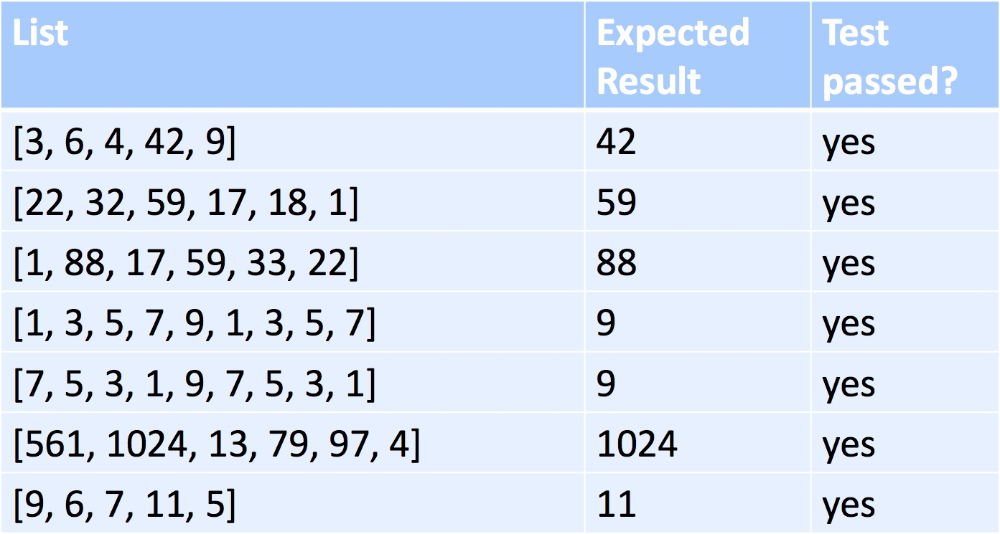
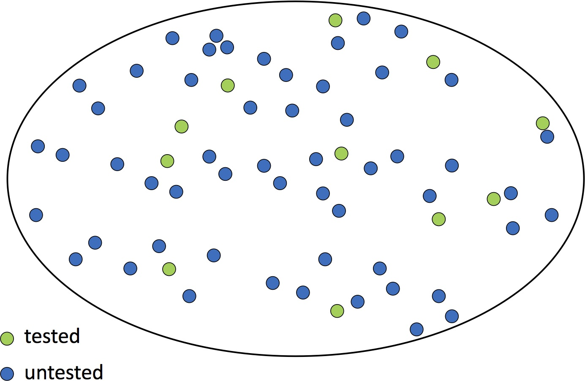
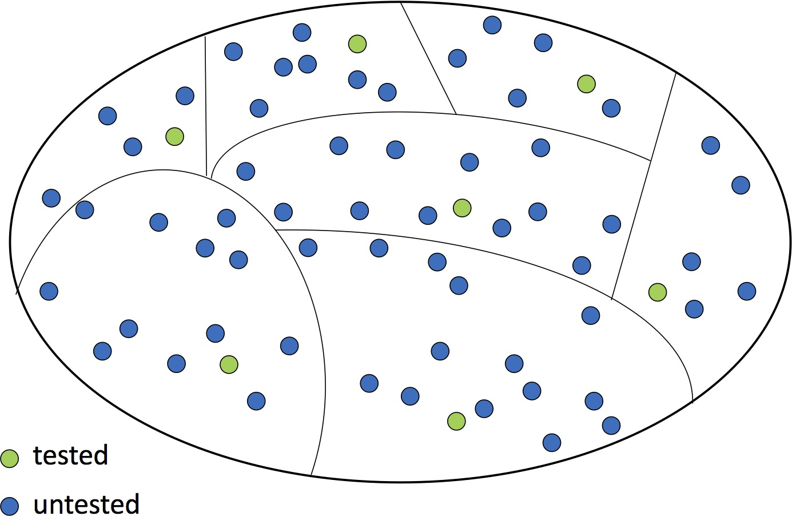
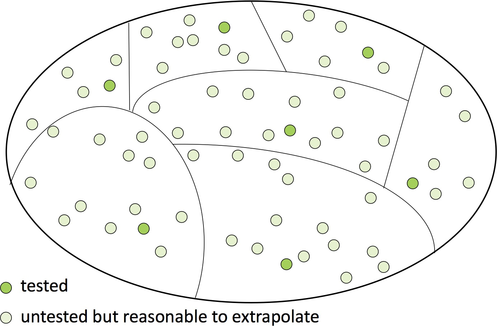

Testing is incredibly important. Software on its own, without strong evidence of its correctness, is of no value. In fact, in many workplaces, the tools used by professionals to manage groups of software developers working on a shared code base won’t accept a contribution of new or modified code unless it contains—and passes—a thorough test suite.
We’ve talked about using a combination of three strategies for testing: doctest, unit tests (we’ll use pytest to implement these) and property-based tests (we’ll use hypothesis to implement these). We’ve also talked a bit about how to choose test cases for a test suite. Let’s look at this more closely.
Suppose max didn’t exist in Python and we were writing a function to find the largest element in a list of integers. Suppose that we have tested the function on the following test cases, and that it passes them all:

Would you be confident that the function works? Maybe not—we only checked 7 cases. What if you were shown that it passed 20 more tests? How about 100 more? Even if it passes 1,000 test cases, you should be skeptical. That may be a lot of tests, but think about how many possible ways there are to call this function. How do we know the tests don’t omit a scenario that could cause failure?
The fundamental problem is that we want to be sure that the code works in all cases but there are too many possible cases to test. In this Venn diagram, each circle represents a possible call to the function (of course there are many more than we could draw). Some of them have been tested.

We may not be able to test every case, but we can still make a convincing argument as follows:
Our Venn diagram now looks more organized:

If we choose the categories well, for each category it will be reasonable to extrapolate from that one tested call to all the calls in the category:

We now have either demonstrated or reasonably inferred correctness in every case.
This kind of argument depends heavily on choosing appropriate categories. We base the categories on properties of the inputs. For example, extending what we saw in an earlier reading, here are some properties and some values for each property:
Not all of these properties are relevant to any particular function. We decide which are relevant based on knowing what the function does. If we also know how the function does it, that can influence our choices as well. For instance, if the function divides a list in half, odd vs. even size is pretty important!
Judgment is also required in choosing which combinations of these properties to test. There is no right or wrong answer here, but a great way to think of it is this: Try to break the code. If you use a good strategy and can’t break it, you have a good argument that it truly works.